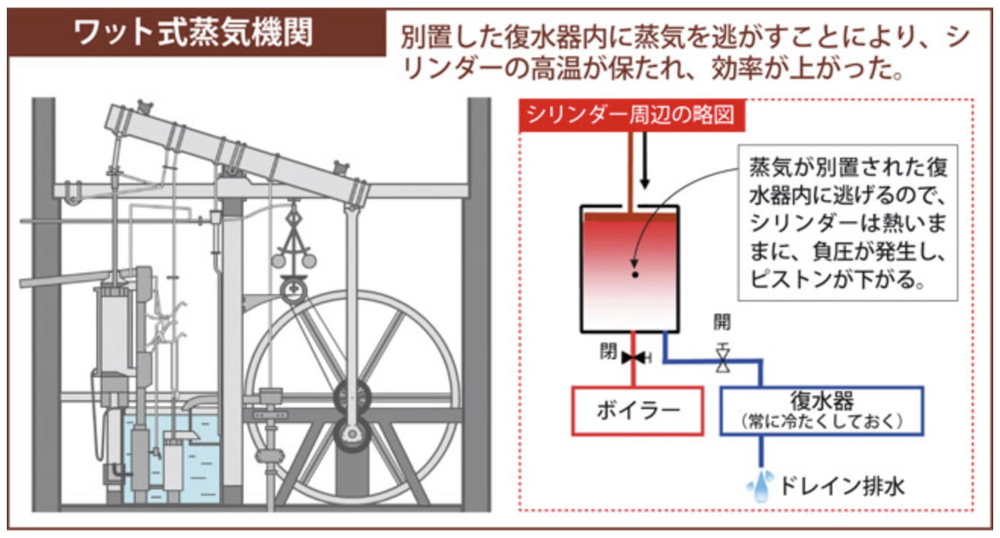
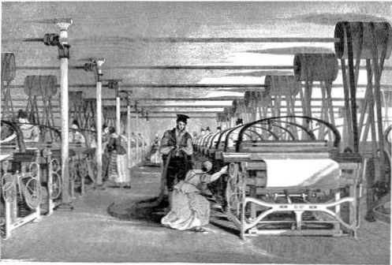
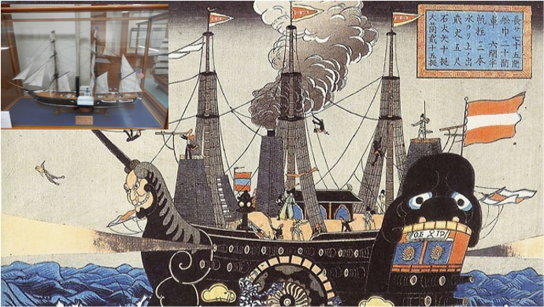
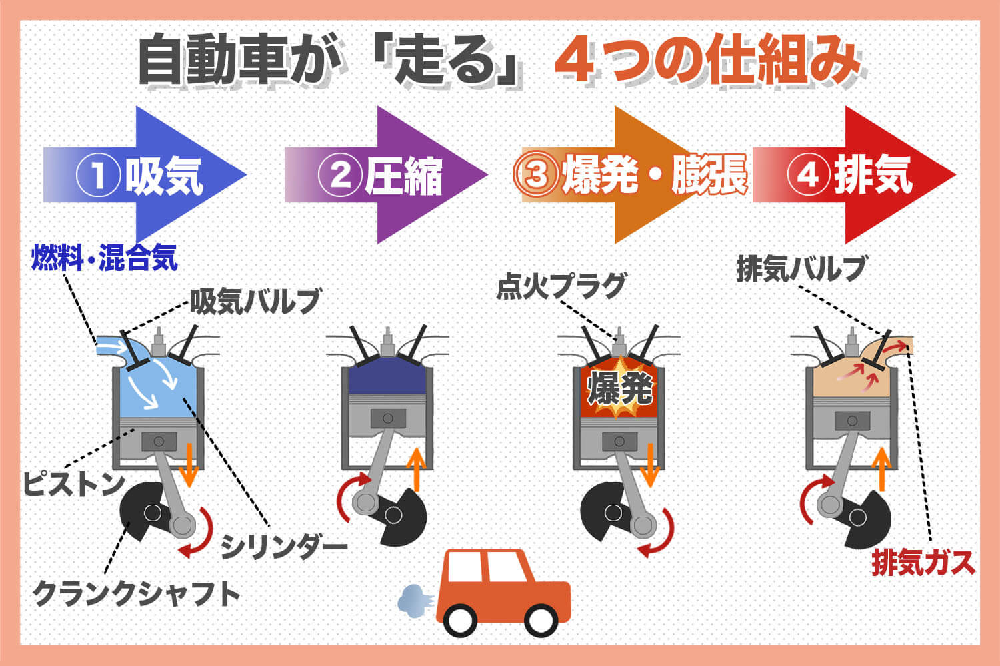
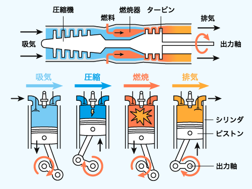

物理が世界をどう変えたか
高校物理「熱力学」発展学習
熱機関は、熱を利用して、ものを動かすための力学的な仕事を取り出す装置のことです。
熱 (フロー) → → → → → 仕事 (動力)
高校物理で学ぶ熱力学第一法則やカルノーサイクルが、この変換の原理を説明しています。
動力は、自然の力や動物、人間の力に頼っていました。
農作業や輸送の中心。パワーも範囲も限定的。
水車を使い、粉ひきなどに利用。川の近くにしか作れない。
風車で揚水や製粉。天候に左右される不安定さ。
生産性は低く、天候や地理的な制約に大きく縛られていました。
ジェームズ・ワットによる改良で、蒸気機関は実用的な動力源となりました。
出典: https://www.japanjournals.com/index.php?option=com_content&view=article&id=1166%3A2011-08-04-11-37-18&catid=72%3Asurvivor&Itemid=103&limitstart=1
石炭を燃やして得た熱で水を沸騰させ、発生した高温・高圧の蒸気がピストンを押すことで仕事を取り出します。これが「熱から仕事への変換」の具体的な応用例です。
場所を選ばず、天候にも左右されない、強力で安定した動力が初めて人類の手に。
蒸気機関の仕組みは、熱力学のモデルで説明できます。
(ピストンを動かす)
ボイラーで吸収した熱 $Q_{in}$ で蒸気が膨張し、ピストンを押して仕事 $W$ をします。仕事を終えた蒸気は冷却され、熱 $Q_{out}$ を放出して水に戻ります。このサイクルが熱機関の基本です。
経験と勘に頼っていた熱機関の開発は、数式によって「科学」になりました。
内部エネルギーの変化、加えられた熱、された仕事の関係を示すエネルギー保存則です。
これにより、熱機関のエネルギー収支を定量的に分析できるようになりました。
投入した熱が、どれだけ有効な仕事に変換されたかを示す「性能指標」です。
技術者たちは、この $e$ を最大化することを目標に改良を重ね、エネルギー効率を飛躍的に高めました。
蒸気機関は繊維工場などの機械を動かす動力源となりました。
出典: 1835年に描かれた機械式織機のイラスト。動力源として水車や蒸気機関が使用されていた。Source: T. Allom. “Illustration of power loom weaving.” in History of the Cotton Manufacture in Great Britain by Edward Baines. Licensed under CC-0.
熱機関は、人々の移動と物流のあり方を根本から変えました。
出典: https://hinomotoo.com/kurofune3/、サスケハナ号（浦賀コミュニティーセンター分館）
大量の物資や人を、馬車より速く、安く、遠くまで運ぶことを可能にした。
風や海流に頼らず航海できるようになり、国際貿易を飛躍的に発展させた。
熱力学の数式と蒸気機関の知見が、現代のエンジンやタービンの基礎を築きました。
▶︎ 熱力学の数式から
▶︎ 蒸気機関の知見から
熱源を外部から内部での燃焼に変え、小型・高効率化。
出典: https://sora-bana.com/engine2
ピストン運動を連続的な回転運動に変え、巨大な動力を得る方式へ発展。
出典: https://www.jema-net.or.jp/energy/thermal.html
産業革命の蒸気機関から始まった熱機関の原理は、形を変えて現代でも使われ続けています。
(内燃機関)
(蒸気タービン)
(ガスタービン)
一方で、化石燃料の大量消費による環境問題は、熱機関がもたらした現代的な課題でもあります。
✅ 熱機関は熱を仕事に変える装置であり、その発明が産業革命の原動力となった。
✅ 蒸気機関は、生産体制（工場）と交通（鉄道・船）に革命をもたらし、社会構造を大きく変えた。
✅ 物理学の法則（熱力学）が、私たちの現代文明の礎を築いたことを示している。
物理を学ぶことは、世界の仕組みを理解することに繋がります。